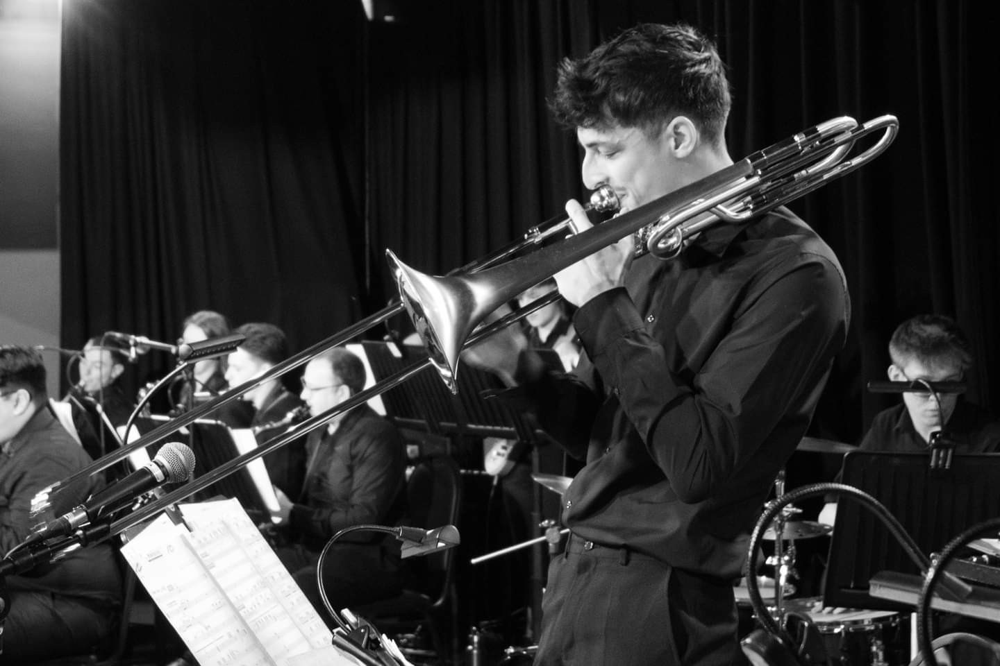
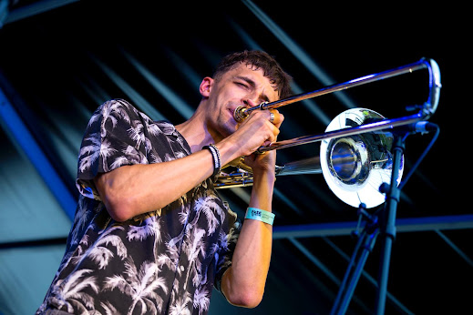
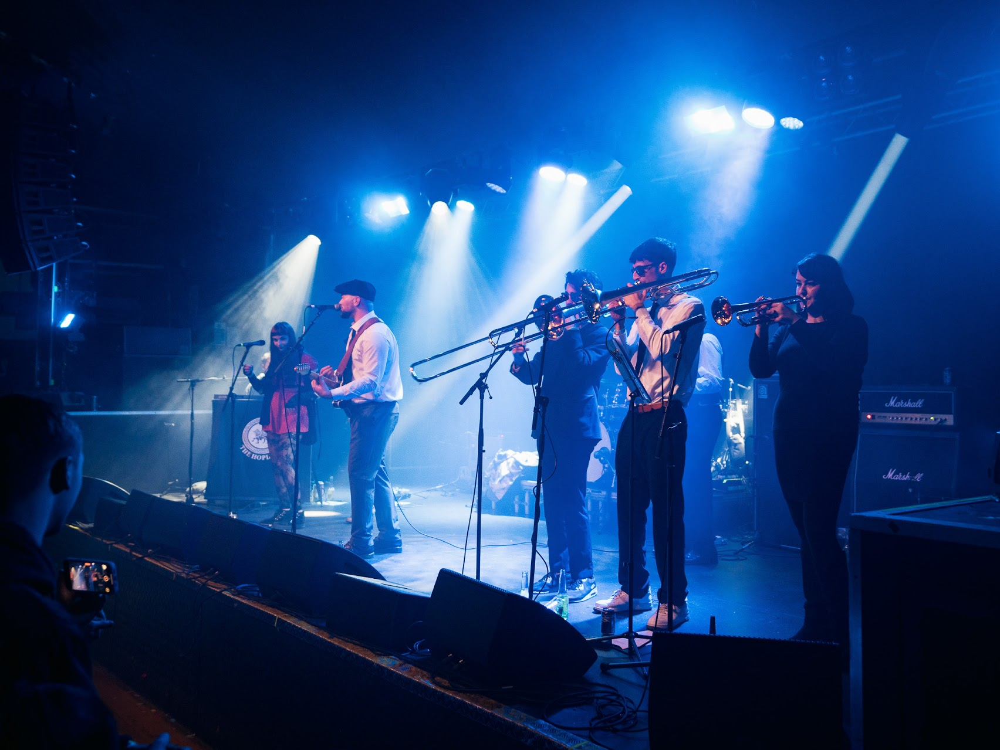

Trombone & Music



I’m a professional trombonist performing across jazz, big band, ska, and brass ensemble settings.
I currently perform with The Hoplites, a Nottingham-based ska band, alongside regular work in jazz and ensemble settings.
This section will feature performance videos, recordings, and booking information.